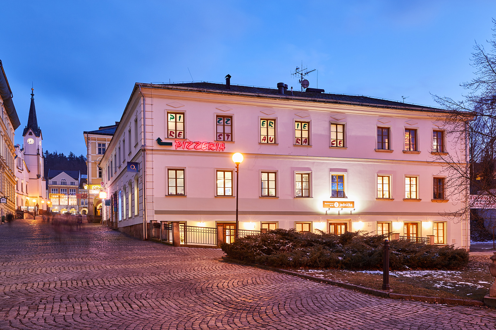
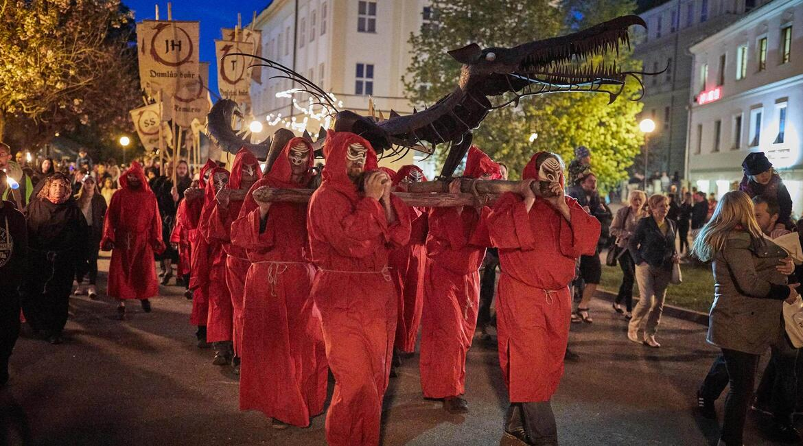
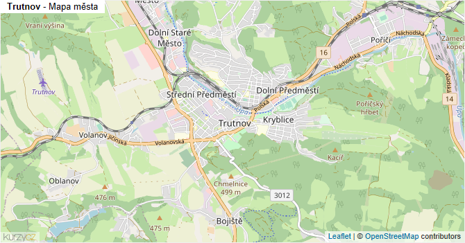

Památky
Výběr míst, která dávají smysl při první návštěvě města.
Web o městu Trutnov. Najdeš tu památky, restaurace, události, dopravu, mapu a krátký plán na jeden den.
Výběr míst, která dávají smysl při první návštěvě města.

Kde se dá zastavit na jídlo nebo kávu během dne.

Krátký přehled akcí a programu ve městě.
Přehledná mapa pomůže s orientací v centru.

Krátký plán na jeden den bez složitého přemýšlení.
Začni na náměstí, dej si krátkou snídani a projdi nejbližší památky a uličky.
Přesuň se na klidnější místo, odkud uvidíš město a získáš přirozenou pauzu.
Vyber si podnik podle toho, jestli chceš rychlý oběd, nebo pohodový delší zážitek.
Mrkni na aktuální program, galerii nebo trh, pokud chceš po obědě živější část dne.